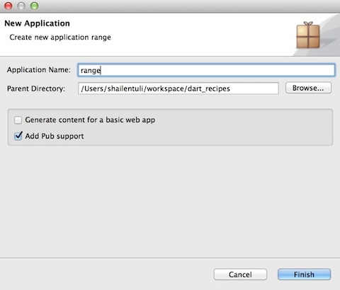

Writing Unit Tests for Pub Packages
Written by Shailen Tuli
Introduction
This article shows you how to create a really simple Dart package. Because we would never want to write a package without testing the code in it, this article also introduces you to the excellent unittest library.
Pub is Dart’s package mananger. After working through this post, you will be able to bundle your Dart libraries and share them with others on pub.dartlang.org.
For the purposes of this post, our basic package consists of
a single range() function modeled roughly on the Python builtin function with
the same name.
range() has the following signature:
List<num> range(num start, num stop, [num step = 1]);
It returns a list of ints between start and stop separated by step
steps. Here is some sample usage:
range(0, 4); // [0, 1, 2, 3] range(1, 6, 2); // [1, 3, 5]
Let’s get started.
Create a simple package
Open up Dart Editor, and create a new application called range. This new application is not a web project, so uncheck Generate content for a basic web app. But do make sure that Add Pub support is checked.

Delete the automatically created bin directory. You don’t need it.
Create a top-level lib directory. Inside lib, create a range.dart file;
the code for range() goes in here. (We’ll get rid of the automatically
created class Range {} code when we define our range() function.)
We should create other directories and files, as well—a
LICENSE, a doc directory for documentation, an example directory with examples
showing usage of our package, and so on—but our focus here is on how to write
unit tests, so we’ll skip over those files and directories for now. To know
what else we should be doing to make this a respectable package, see the
excellent writeup of
package layout conventions.
Add the unittest package to your library
With the basic files created for our package, let’s open up pubspec.yaml
and add some metadata for our pub package, following the
pubspec format.
Every package must contain a pubspec.yaml; in fact, it is this file
that makes it a package.
Add a simple description for the package and specify its only dependency,
the unittest package. Your pubspec.yaml should look like this:
name: range
description: An approximate implementation of the Python range() function.
dependencies:
unittest: any
Saving pubspec.yaml in Dart Editor automatically triggers a call to
pub install; this creates a pubspec.lock file and a bunch of symlinks
that are necessary for the plumbing to work correctly. Fortunately,
pub handles all these details for us.
Write some code
Let’s create a bare-bones implementation for range(). Your lib/range.dart
should look like this:
library range;
List<int> range(int start, int stop, [int step=1]) {
if (start >= stop) {
throw new ArgumentError("start must be less than stop");
}
List<int> list = [];
for (var i = start; i < stop; i+= step) {
list.add(i);
}
return list;
}
Write some tests
Create a top-level test directory. Inside test, create a range_test.dart
file; our tests go in here. Remove the class RangeTest {} code from this file.
We won’t be needing it for this simple example.
Before we can run our tests, test/range_test.dart needs access to the
unittest package and the range library. At the top of range_test.dart,
add these import statements:
import 'package:unittest/unittest.dart'; import 'package:range/range.dart';
Now add a couple of tests. (We’ll need many more to really test range(), but
these are a good start.) Your range_test.dart should look like this:
import 'package:unittest/unittest.dart';
import 'package:range/range.dart';
void main() {
test("range() produces a list that starts at start", () {
expect(range(0, 4)[0], equals(0));
});
test("range() throws an exception when start > stop", () {
expect(() => range(5, 2), throwsA(new isInstanceOf<ArgumentError>()));
});
}
An individual test goes inside test(). The expect() function
evaluates the equality
between the expected and actual values. A string argument to test() describes
the purpose of the test.
If you run the tests now and get an error because Dart Editor cannot locate the
unittest library, try running pub update. (You can find it in Dart Editor’s
Tools menu.) You should see the following output
in Dart Editor:
Running pub update ...
Resolving dependencies...
Dependencies updated!
After running pub update, you should see a newly created packages symlink
in the test directory that gives your tests access to the unittest
library. (pub update recursively creates symlinks in every subdirectory of
/test, /web, and /bin; it does not create symlinks in lib.)
Now run the tests by pressing the green arrow in Dart Editor, or pressing
Cmd+R on a Mac, or typing dart test/range_test.dart on the
command line. You should see the following output:
unittest-suite-wait-for-done
PASS: range() produces a list that starts at start
PASS: range() throws an exception when start > stop
All 2 tests passed.
unittest-suite-success
We’ve made good progress, but our test coverage is still pretty limited. Let’s
add a few more tests and group them in a way that makes our testing strategy
clear. Change range_test.dart so it looks like this:
import 'package:unittest/unittest.dart';
import 'package:range/range.dart';
void main() {
group("range()", () {
group("produces a list that", () {
test("starts at start", () {
expect(range(0, 4)[0], equals(0));
});
test ("stops before stop", () {
expect(range(0, 4).last, equals(3));
});
test("has consecutive values if no step is given", () {
expect(range(1, 6), equals([1, 2, 3, 4, 5]));
});
test("has non-consecutive values with step > 1", () {
expect(range(1, 6, 2), equals([1, 3, 5]));
});
});
group("throws an exception when", () {
test("start > stop", () {
expect(() => range(5, 2), throwsA(new isInstanceOf<ArgumentError>()));
});
test("start == stop", () {
expect(() => range(5, 5), throwsA(new isInstanceOf<ArgumentError>()));
});
});
});
}
Much better. We use nested calls to group() to organize our tests, and we pass
descriptive string args to each group() call to indicate our intent. If
you run the tests again, you should see:
unittest-suite-wait-for-done
PASS: range() produces a list that starts at start
PASS: range() produces a list that stops before stop
PASS: range() produces a list that has consecutive values if no step is given
PASS: range() produces a list that has non-consecutive values with step > 1
PASS: range() throws an exception when start > stop
PASS: range() throws an exception when start == stop
All 6 tests passed.
unittest-suite-success
Summary
We created a minimal Dart package, made it (barely) good enough
to put on pub.dartlang.org, and wrote a few tests. This is a good start, of course, but
we have only scratched the surface of how we should test our packages. For a
very thorough explanation of how the unittest framework works in Dart, I
highly recommend a careful reading of
Unit Testing with Dart by
Graham Wheeler. He goes into considerable detail about writing tests, defining
setUp() and tearDown(), running asynchronous tests, using and creating
matchers, and configuring your test environment.